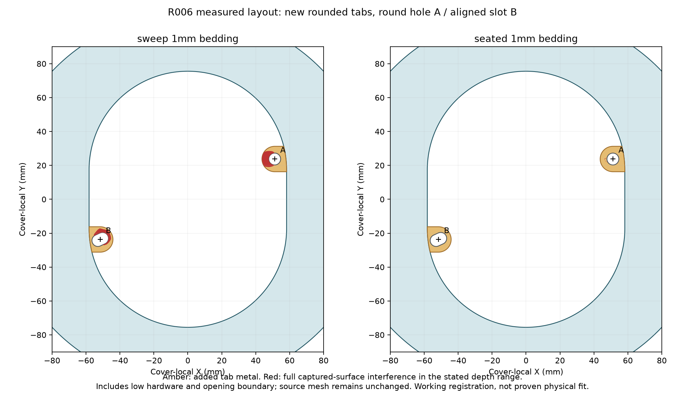
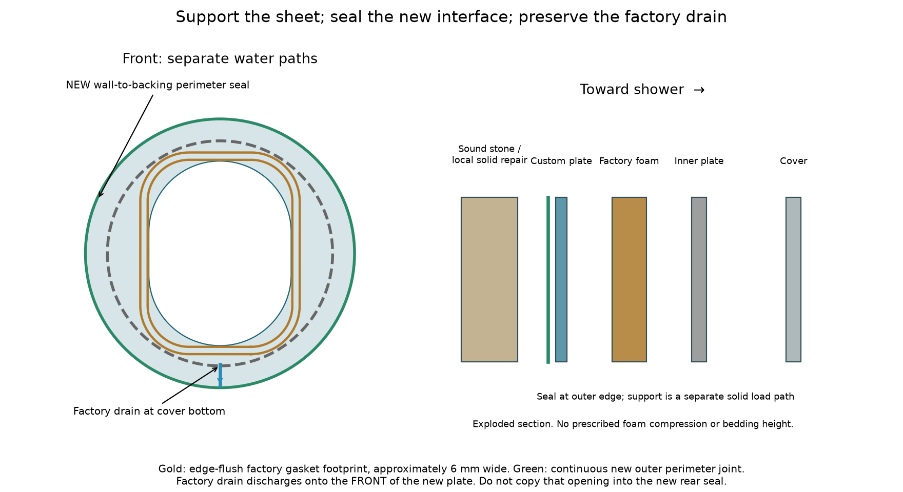

FT02 project home
ENGINEERING RECORD
Fit-trial release | Physical and permanent checks remain open
October 17: updated narrated explanation
Adding tabs does not move the foam or consume its support margin. The earlier comparison separately moved the whole backing. TR02 now tests longer loose slots and a modestly smaller opening, with both installed scans, handle access and the actual RF01 formwork. Watch the new narrated video and read the study. The historical tab rejection below describes the earlier candidates; the current order files have not been replaced.
Accepted survey and registration
R006 selected planar calipers govern the two mounting holes. The source scan and historic observations remain intact.

Final readings
DA 5.66; DB 5.66; FAX 119.17; FBX 16.38; FAY 61.40; FBY 108.85 mm. Contacts are TOP/LEFT blocks to FAR inside hole walls on the loose front face. FAX118.79 and FBY109.06 are superseded, not averaged.
Derived layout
A (116.34,58.57), B (13.55,106.02) from LEFT/TOP, y down. In nominal outline-centered y-up frame: A (+51.165,+23.980), B (-51.625,-23.470). Center spacing 113.213456 mm; predicted edge gap 107.553456. Old edge gap 106.39 implies 112.05 centers and remains a 1.163456 mm disagreement, not an uncertainty bound.
Working transform
Outline to cover translation [0.0, -0.22999999999998266] mm, no reflection. Cover to installed translation [4.014384219632262, 39.700994788750954]; rigid row rotation is recorded in engineering/locator_evaluation.json. This uses cover-edge calipers plus equal lower-bore and horizontal-centering assumptions and diagnostic cap picks; it is not a measured final pose.
Locator choice and access
Select plain upright capsule and a removable four-direction concentric gauge. R006 round-hole/slot tabs were evaluated at 6.4, 7 and 8 mm. Current captured shafts conflict near the seated A tab; current enlarged rod ends also obstruct insertion. Retraction/removal can remove the tip-path conflict but does not establish shaft/formed-plate plane registration. Widening locators adds more stack play than the 1 mm nominal inward gasket reserve. Plain access plus removable centering avoids making those uncertain rod axes an extra constraint.

Candidate geometry
Rounded tabs 15 mm wide, R1.5 roots. Round A / line-aligned slot B: widths 6.4, 7, 8 mm; lengths 9.4, 10, 11 mm. Both factory bores lie wholly inside the plain capsule, so tabs would add real inward material. A/bore orientation was checked; the slot follows the spacing vector.
Budget
Nominal #10 crest 4.826 mm and factory bore5.66 give 0.417 mm factory radial play. A 7 mm custom hole adds1.087, totaling1.504 mm translational opportunity before cut error, depth-plane and pose variation. Nominal extra land is only1 mm INSIDE the approximately6 mm full gasket band. Slots cannot absorb arbitrary transverse error.
Specific conflicts
The new full-source check includes low/boundary surfaces omitted by FT01. At illustrative1 mm bedding, the balanced tab has about0.51 mm2 seated captured-surface overlap; the present rod ends obstruct its insertion sweep. Removing/retracting studs may remove end conflicts but does not prove the unknown formed-hole-plane relation. Plain access avoids those added constraints.
Coverage, support and remaining trial checks
Geometric source checks do not establish physical contact or water performance. Read the complete machine-readable study for every tested scope.

Coverage and gap
Working-pose minimum projected outer margin across stored damage traces: 10.01 mm; pair gap 3.31 mm. Historical poses remain separate. These are trace margins, not verified sound support. No new valve position is prescribed.
Full-source scope
All primary source triangles were available; main local check uses un-eroded opening and Z=0 through80. Plain plate overlaps some low source topography at Z0; at1 mm illustrative bedding no in-opening projected interference is found. Real support must decide seating height. No hidden-back-face or water-tightness claim follows.
Diverter
Rear factory plate is installed after the custom ring and need not pass through its aperture. Official exterior CAD does not define its rear contact. D124/80 remains a useful sacrificial trial with explicit complete rear-contact, screw engagement, support and tool-access checks; no actual pass is claimed.
What remains physical
Factory engagement and cover centering, full foam/rear-contact landing, stable support and retention, neighbor gap, correct adapters/rod adjustment, service access, valid seal detail, cure, function/drain checks and separate plumbing/spray tests.
Sources and purchasing evidence 1
Dated primary-source research; catalog claims and actual quotes are separate.
Kohler main trim sequence and adapter table
1041504-2-F pp3,7-8: applicable revision must be checked; 7/16 maximum is wall-to-stud, not a stem limit.
https://resources.kohler.com/onlinecatalog/pdf/1041504_2.pdf
Kohler alternate main trim revision
Setscrew/ring versus bonnet versions differ. Match actual components.
https://techcomm.kohler.com/techcomm/pdf/1216755-2.pdf
Kohler diverter trim
1190382-2-A: rear plate before cover; adapter #1/#2/#3; notch down.
https://techcomm.kohler.com/techcomm/pdf/1190382-2.pdf
Kohler stud 1038645
Overall 4.56 inches, #10-24. Separate from allowable front projection.
https://www.kohler.com/en/support/find-a-service-part/shop-parts/stud-10-24-x-4-56-l-1038645
LATASIL
Archived DS-6200.1-0926. Stone test and 9118 primer; suitable joint geometry and cure required. Not structural support.
https://www.laticrete.com/en/products/latasil
Sources and purchasing evidence 2
Dated primary-source research; catalog claims and actual quotes are separate.
Unselected standard Ponoko304,1.50 mm
Standard #2B alternative was rejected for this quote because its cosmetic finish and D127 deburring threshold do not suit the pair as well as the live #4 option. Recorded range1.40-1.60 mm; not the selected metal.
https://www.ponoko.com/materials/stainless-steel
Ponoko clear acrylic, live 1.50 mm selection
2026-10-16: thickness 1.27-1.73 mm, 0.20 mm nominal kerf, minimum feature 1 mm. Compensated DXFs are distinct from intended finished CAD.
https://www.ponoko.com/materials/clear-acrylic
Ponoko kerf policy
Metal compensation is automatic; nonmetal paths require allowance. Separate acrylic files expand outside and shrink inside cutting paths by 0.10 mm radially. Actual burn varies.
https://help.ponoko.com/en/articles/4442594-how-much-material-does-the-laser-burn-away
Ponoko manufacturing standards
Stock thickness, cutting tolerance and flatness are separate. Ordinary sheet flatness is not guaranteed; finish may have scratches or burrs. Requested targets require supplier agreement.
https://help.ponoko.com/en/articles/9358110-ponoko-manufacturing-standards
254 PLATINUM Plus
Candidate thin-set for compatible supported stone/cementitious substrate. Obtain actual substrate/thickness/cure requirements for the local repair.
https://cdnmdm.laticrete.com/Datasheet/NA/51224/Datasheet_NA_en_51224.pdf
Sources and purchasing evidence 3
Dated primary-source research; catalog claims and actual quotes are separate.
LATAPOXY 310
DS-679-1026: vertical supported stone bonding; clean dry sound substrate, 10-35 C application, up to 25 mm non-sag, equal-volume components, standard working time 30-45 min / initial set 5-6 h at about 21 C. Initial set is not full water-exposure cure. Porous/fissile stone limits matter.
https://cdnmdm.laticrete.com/Datasheet/NA/98/Datasheet_NA_en_98.pdf
Ponoko #4 brushed304, live authenticated quote
Selected in quote interface2026-10-16:1.52 mm nominal,1.44-1.64 range,1.54 mm minimum feature,0.10 mm kerf. Brushed one face; scratches/burrs remain possible. Deburring description uses75 mm size and1.5 mm/0.060 inch thickness threshold. Draft proof stored locally; no account data in Git.
https://www.ponoko.com/materials
Actual Ponoko #4 quote and finishing eligibility
Live private quote16 October2026: #4 304 Stainless Steel1.52 mm; range1.44-1.64, minimum feature1.54, kerf0.10. Main offers Linear Deburring($10.83); diverter offers only As cut. $80.47 pair includes ordinary delivery, no separately shown tax or extra diverter finishing. Local quote snapshots are recorded separately; public catalog is not the quote.
https://www.ponoko.com/materials
Actual prices and order recommendation
Ponoko private formal quotes, 16 October 2026: one main plus one diverter. Clear acrylic1.50 mm: $43.79 including ordinary delivery. #4 304 stainless1.52 mm: $80.47 including main linear deburring and ordinary delivery; diverter remains AS CUT. Tax is not separately shown; additional diverter finishing is not included. Both estimate26 October arrival (3 business-day production plus UPS Ground), subject to order timing.
Recommended route
Recommended first trial: clear acrylic at $43.79 because the remaining gasket/contact checks are easier to see and the metal diverter has no quoted deburring option. Metal is1.84x this price before that missing finishing. If a qualified finisher will smooth all diverter edges at acceptable cost, metal-first remains reasonable with the same selected geometry. Do not use an as-cut edge against tile or gasket. Both choices accept possible remake risk; neither is permanent-use approval.
Printed fallback
Use T1520 metal STL for a thickness-matched print only if clear is unsuitable. No part-specific print quote exists; plastic does not establish metal stiffness or water performance.
Live quote scope
Private formal PDFs are preserved locally; the vendor uses one mutable working cart. Separate metal/clear snapshots preserve what was priced. A cart link may later display a different alternative. No payment, staff message, or physical check occurred.
Rear-fill form assessment
Use the one-piece removable front form only if the trial shows missing support and the contractor verifies sound repair substrate/permanent backing. Its modest drafted collar clears the captured local surfaces in the tested working pose. Do not order it as a required companion to the two plate quotes; first use the plate trial to locate actual unsupported zones.

Use only where support is missing
Trial the two metal/acrylic plates first. If firm bearing is absent, contractor checks substrate and temporary brace before selecting this form. No new owner survey.
Different functions
The D240 form is temporary and12 mm thick. It is not the D220 escutcheon or a permanent liner. No casting until plumbing position and service access pass.
Cure and removal
Use REPAIR_FORM_SETUP for product conditions, front datum, protected rear filling and pull-forward removal. No one-hour strength claim is treated as automatic strip, seal or water readiness.